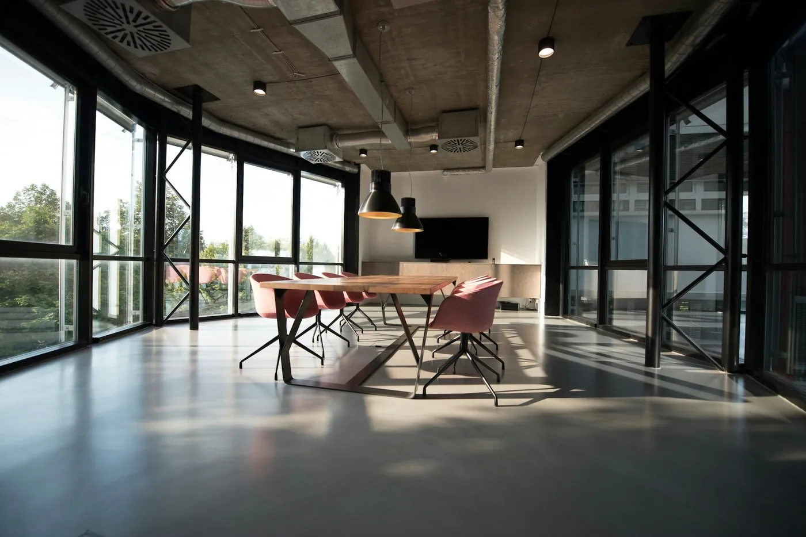

About / KRD
Small studio.
Direct process.
You work directly with the person designing and building the website. Fewer layers means clearer communication and fewer lost details.
Direct contact.
Real attention.
KRD Websmith is a web design and development studio based in Kitchener, Ontario. I build custom websites for local businesses that want something clearer, more credible, and more considered than a premade template.
The priority is the customer experience. The site should be easy to understand, easy to use, and easy to act on. The code and the motion only matter when they support that.

Kitchener, Ontario / RemoteClear communication
You know what is happening, what is needed, and what the next step is.
Customer-first decisions
Navigation, content, and calls to action are built around how real visitors use the site.
No fake proof
No invented testimonials, fake client logos, or made-up performance numbers.
Built to grow
The structure can expand as the business adds services, pages, and stronger systems.